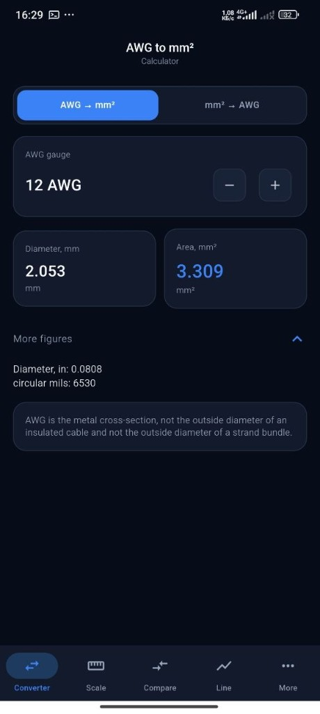
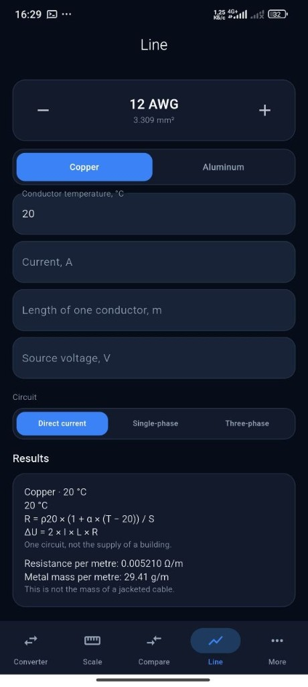

Calculator and scale
Free
Both directions, and the gauge scale from 4/0 to 40, stay on the phone with no account.
Convert AWG wire gauge to mm² and back, from 4/0 to 40. 12 AWG is 3.309 mm². The calculator works offline.
Get the Android appAWG is the metal cross-section, not the outside diameter of an insulated cable and not the outside diameter of a strand bundle.

Free
Both directions, and the gauge scale from 4/0 to 40, stay on the phone with no account.
$4.99 once
Favorites, labeled pairs, compare, a nearest IEC nominal, share text, ohms per metre, metal mass, voltage drop, and the PUE current handbook. It does not pick a wire for a load.



Version 1.0.0 is on Google Play. A rewarded video can open Pro tools for 10 minutes, up to 3 times a day, and does not replace the purchase.
Get the Android app12 AWG is 3.309 mm². Its metal diameter is 2.053 mm. The diameter follows ASTM B258: 0.127 × 92^((36 − n) / 39).
No. AWG is the metal cross-section, not the outside diameter of an insulated cable and not the outside diameter of a strand bundle.
Yes. The conversion runs on the phone and does not need a network.
Pro is $4.99 once. The converter and the scale from 4/0 to 40 stay free. A rewarded video can open Pro tools for 10 minutes, up to 3 times a day, and does not replace the purchase.
No. The current handbook shows PUE tables 1.3.4 and 1.3.5. It does not choose a wire for a load.
The conversion runs on the phone. The app uses Firebase Analytics and Crashlytics, and it shows Yandex ads. There is no account to delete.